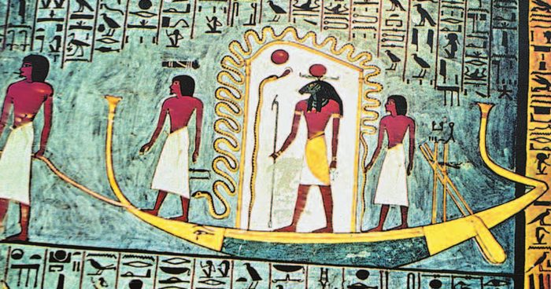
Боги
Геродот назвал Древний Египет землёй богов. Сами египтяне писали о «миллионе богов» — на самом деле почитали многие тысячи.
Своих богов египтяне представляли в виде людей, животных и полулюдей-полузверей. А ещё поклонялись священным животным: кошкам, коровам, птицам, змеям. Жука- почитали как одну из форм солнечного божества: он катит свой шарик так же, как солнце катится по небу.
Главным богом считался , бог солнца. Солнце давало жизнь, и ему поклонялись повсюду. По легенде, каждое утро Ра проплывал в своей лодке по небосводу и освещал землю. Он мог принимать разные обличья: то красного раскалённого диска, обвитого коброй, то ястреба.
Когда столицу перенесли в Фивы, бога дневного солнца Амона — покровителя этого города — объединили с Ра. Получился . Утреннее солнце олицетворял Хепри, а символом луны был Хонсу, сын Амона-Ра и богини-матери Мут.
— бог сил природы, а позже царь загробного мира: он открыл людям секреты земледелия и ремесла. Его супруга — богиня-волшебница , она олицетворяла женственность и семейную верность. Их сын считался покровителем фараона. Главным помощником Осириса в царстве мёртвых был .
Брата Осириса, , бога чужеземцев и пустыни, изображали с телом человека и головой осла. Бога мудрости, счёта и письма звали — у него было прозвище Владыка Времени. Нил египтяне тоже обожествили: богом реки был Хапи. Богиней правды считалась Маат, покровительницей женщин — Бастет.
В честь богов строили десятки храмов, а главные жрецы были богатыми и могущественными людьми. Фараонов это иногда раздражало.
Один из них, , в XIV (14) веке до н. э. провёл : отменил почитание всех богов, кроме единственного — Атона, бога солнечного диска. Себя Эхнатон объявил единственным сыном Атона: поклоняться следовало только им двоим.
Он первым попытался перейти от многобожия к единобожию. Но вскоре после его смерти культ всех богов восстановили, а самого Эхнатона вычеркнули из списка царей.
Геродот назвал Древний Египет землёй богов. Сами египтяне писали о «миллионе богов», хотя в действительности почитались лишь многие тысячи. Своих богов древние египтяне представляли в виде людей, животных, полулюдей-полузверей. Население страны поклонялось и многим священным для них животным, например кошкам, коровам, птицам, змеям.
Бог солнца Ра считался главным богом. Солнце давало жизнь, и ему поклонялись повсюду. По легенде, каждое утро Ра проплывал в своей лодке по небосводу, освещая землю. Он мог принимать разные обличья — иногда красного раскалённого диска, обвитого коброй, иногда ястреба.
С перенесением столицы государства в Фивы бога дневного солнца Амона, покровителя этого города, объединили с богом Ра и стали называть Амон-Ра. Утреннее солнце олицетворял бог Хепри. Сын Амона-Ра и его супруги богини-матери Мут, Хонсу был символом луны и появлялся только в ночное время.
Осирис — бог сил природы, а позднее царь загробного мира, открыл людям секреты земледелия и ремесла. Супругой Осириса была богиня-волшебница Исида, она олицетворяла собой женственность и семейную верность. Сына Осириса и Исиды, бога Хора, считали покровителем фараона, а Амона-Ра — божественным отцом и также покровителем фараона. Главным помощником Осириса в царстве мёртвых был бог Анубис.
Брата Осириса, Сета, бога чужеземцев и пустыни, египтяне изображали с телом человека и головой осла. Египтяне почитали бога мудрости, счёта и письма Тота, он имел прозвище Владыка Времени. Обожествляя Нил, египтяне поклонялись божеству реки — богу Хапи. Богиней правды была Маат. Покровительницей женщин считали богиню Бастет.
В честь богов строили десятки храмов, а главные жрецы были богатыми и могущественными людьми. Иногда это вызывало раздражение фараонов. Один из них, Эхнатон, в XIV (14) веке до н. э. провёл реформу и отменил почитание всех богов, кроме единственного — Атона, бога солнечного диска. Эхнатон провозгласил себя единственным сыном бога Атона, и только им двоим следовало поклоняться. Эхнатон первым попытался перейти от многобожия к единобожию. Однако вскоре после смерти Эхнатона культ всех богов восстановили, а его самого вычеркнули из списка царей.
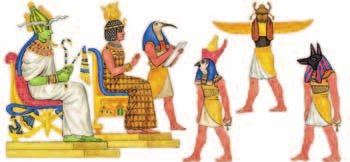
▲ Почему бог Тот единственный изображён с письменными принадлежностями?
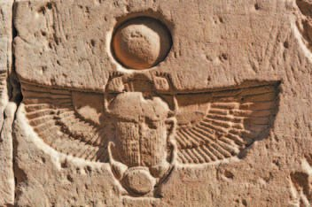
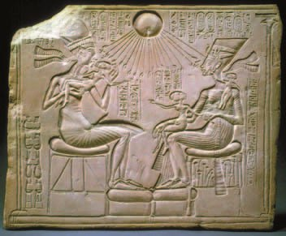
▲ Какой символ говорит о божественном происхождении семьи фараона Эхнатона?
- Кого египтяне считали главным богом?
1. Почему именно Ра, бог солнца, стал у египтян главным богом?
2. Почему бога Амона объединили с Ра именно тогда, когда столицей стали Фивы?
3. Эхнатон отменил всех богов, кроме Атона. Кому в Египте такая реформа была особенно невыгодна и почему?
4. Эхнатона вычеркнули из списка царей. Что это означало для египтянина — сильнее ли это, чем просто забыть?
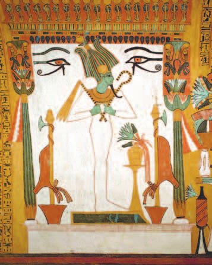
▲ Почему Осирис изображён с символами власти фараона?
Миф об Осирисе и Исиде
По верованиям египтян, Осирис с помощью Тота установил законы, объяснил людям, что можно есть, а что нельзя, научил строить каналы, орошать поля и выращивать урожай.
Тот дал жителям Египта письменность, придумал имена для людей и названия для вещей, обучил ремёслам, зодчеству и искусствам. А Исида и Тот познакомили людей с магией, медициной и лечебными свойствами трав.
Осирису завидовал брат — злобный бог пустыни Сет. Однажды он устроил большой пир и пригласил Осириса. Во время пира Сет показал гостям богато украшенный ящик-саркофаг и пообещал подарить его тому, кому он придётся впору.
Когда внутрь лёг Осирис, Сет быстро закрыл и запечатал ящик. Попавшего в ловушку Осириса бог пустыни разрубил на четырнадцать частей.
Со временем вырос сын Осириса и Исиды — Хор. Он вступил в долгую борьбу со своим дядей, убийцей отца, и одержал победу. Исида и Анубис нашли гроб с телом Осириса, а Хор воскресил его.
Но Осирис не захотел оставаться на земле. Он отправился в царство мёртвых и стал его владыкой.
По верованиям египтян, Осирис с помощью Тота установил законы, объяснил людям, что можно есть, а что нельзя, научил строить каналы, орошать поля, выращивать урожай. Тот дал жителям Египта письменность, придумал для них имена, а для вещей — названия, обучил ремёслам, зодчеству, искусствам. Исида и Тот познакомили людей с магией, медициной, лечебными свойствами разных трав.
Осирису завидовал его брат — злобный бог пустыни Сет. Однажды он устроил большой пир и пригласил на него Осириса. Во время пира Сет показал гостям богато украшенный ящик-саркофаг. Хозяин пообещал подарить этот саркофаг тому, кому он придётся впору. Но когда внутрь лёг Осирис, Сет быстро закрыл и запечатал ящик. Попавшего в ловушку Осириса бог пустыни разрубил на четырнадцать частей.
Со временем вырос сын Осириса и Исиды Хор. Он вступил в долгую борьбу со своим дядей, убийцей отца. В этой борьбе Хору удалось одержать победу. Исида и Анубис нашли гроб с телом Осириса, а Хор воскресил его. Однако Осирис не захотел оставаться на земле, отправился в царство мёртвых и стал его владыкой.
- Какие знания, по верованиям египтян, даровали им боги?
5. Осирис научил людей земледелию, а Тот — письменности. Вспомни §4 и §6—7: почему египтяне приписали богам именно эти два умения?
6. Почему Сет в этом мифе — бог именно пустыни?
7. Хор воскресил отца, но Осирис ушёл в царство мёртвых. Как это связано с тем, что Хора считали покровителем фараона?
В царстве Осириса
Готовиться к переходу в царство мёртвых знатный египтянин начинал с первых лет самостоятельной жизни. Надо было построить — «дом вечности», украсить её изнутри и подготовить всё, что понадобится в той жизни: пищу, одежду, украшения.
В гробницу клали — сборник священных и магических текстов на папирусе. Египтяне считали, что она служит умершему путеводителем по иному миру.
Тело умершего превращали в . Из него вынимали внутренности и наполняли сухими травами, несколько десятков дней держали в особом растворе, а потом пропитывали бальзамами — ароматическими смолами, чтобы тело не гнило. Это называлось бальзамированием.
Мумию клали в — он имел форму тела человека, — а потом в гробницу вместе с вещами и «Книгой мёртвых».
По верованиям египтян, Анубис приводил умершего на к Осирису. Там на весах взвешивали его сердце. Если в нём было больше добра, человек отправлялся в чудесные поля царства мёртвых. Если перевешивали плохие поступки, свирепое чудовище Аммат разрывало умершего на мелкие части.
Для некоторых фараонов сооружали особые монументальные гробницы — . Внутри находилось помещение с саркофагом. Вместе с ним в гробницу помещали вещи, которыми фараон пользовался при жизни: мебель, посуду, оружие, украшения. Стены украшали рельефами — выпуклыми изображениями на плоскости — и надписями о жизни богов и фараонов.
Готовиться к переходу в царство мёртвых знатный египтянин начинал с первых лет самостоятельной жизни. Надо было построить гробницу — «дом вечности», украсить её изнутри и подготовить всё, что понадобится в той жизни: пищу, одежду, украшения. В гробницу клали так называемую «Книгу мёртвых» — сборник священных и магических текстов на папирусе. Египтяне считали, что «Книга мёртвых» служила умершему путеводителем по иному миру, облегчала путь в царстве Осириса и его благополучное завершение.
После смерти из тела умершего вынимали внутренности и наполняли его сухими травами. Затем в течение нескольких десятков дней держали в специальном растворе, после этого тело пропитывали бальзамами (ароматическими смолами), чтобы предохранить его от гниения. Этот процесс назывался бальзамированием. В результате бальзамирования тело умершего человека становилось мумией. Её клали в саркофаг, который имел форму тела человека, после чего мумию помещали в гробницу вместе с вещами и «Книгой мёртвых».
По верованиям египтян, Анубис приводил умершего на суд к Осирису, где на весах взвешивали его сердце. Если в нём было больше добра, человек отправлялся в чудесные поля царства мёртвых. Если перевешивали плохие поступки, свирепое чудовище Аммат разрывало умершего на мелкие части.
Для ряда фараонов сооружали особые монументальные гробницы — пирамиды. Внутри пирамиды находилось помещение с саркофагом — гробом умершего. Вместе с саркофагом в гробницу помещали вещи и предметы, которыми фараон пользовался при жизни: мебель, посуду, оружие, украшения. Стены гробниц украшали рельефами (выпуклыми изображениями на плоскости) и надписями, которые рассказывали о жизни богов и фараонов.
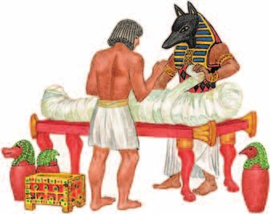
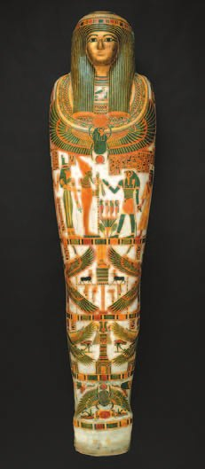
▲ Как ты думаешь, какие изображения были на саркофаге?
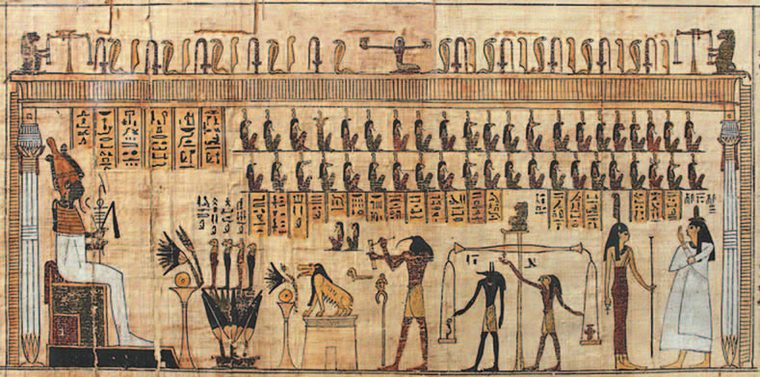
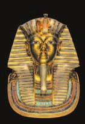
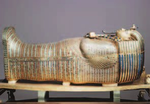
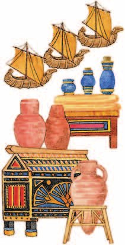
- Почему переход в загробный мир и суд Осириса были важным элементом в жизни египтян?
8. Зачем в гробницу клали мебель, посуду, оружие и украшения?
9. Почему египтяне так старались сохранить именно тело, а не только положить в гробницу вещи?
10. На суде Осириса взвешивали сердце. Как эта вера должна была влиять на то, как египтянин жил при жизни?
11. Картер искал гробницу шесть лет, а потом дошёл до саркофага только в четвёртом ковчеге. Зачем египтяне прятали его так надёжно?
Храмы
Чтобы избежать гнева богов и заслужить их милость, египтяне совершали — приносили богам дары: продукты, животных. В их честь возводили множество храмов.
Самые древние храмы Египта были небольшими: их строили из тростника или дерева. Позже стали создавать огромные каменные комплексы — они сохранились до наших дней. Самые знаменитые — Карнак, Луксор, Абу-Симбел. К луксорскому храму ведёт целая аллея , по которой шли торжественные процессии.
Центральная часть храма в честь бога Амона в Карнаке по площади равна современному стадиону.
Стремясь избежать гнева и заслужить милость богов, египтяне совершали жертвоприношения — приносили богам различные дары: продукты, животных. В их честь возводилось множество храмов.
Древнейшие храмы Египта были небольшими сооружениями, построенными из тростника или дерева. Позднее стали создаваться огромные архитектурные комплексы из камня, сохранившиеся до наших дней. Самые знаменитые из них — Карнак, Луксор, Абу-Симбел.
Центральная часть храма в честь бога Амона в Карнаке по площади равна современному стадиону.
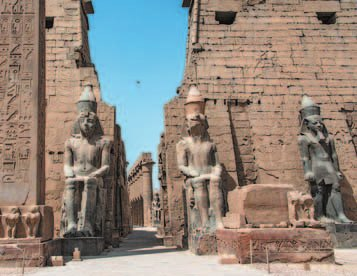
- Подумай, почему египтяне сооружали огромные, по сравнению с человеческим ростом, храмы и скульптуры богов и фараонов.
12. Первые храмы были из тростника и дерева, а поздние — из камня. Почему поменялся материал?
13. Зачем делать храм размером со стадион и статуи выше человека в несколько раз?
Подведём итоги
- Какую роль играла религия в жизни египтян?
- Подумай, что хотел изменить Эхнатон своей реформой. Кто и почему был ей недоволен?
- Как ты думаешь, почему каждый бог в Древнем Египте покровительствовал определённым категориям населения?
- Как проходили похоронные обряды египтян? Различались ли обряды в зависимости от положения человека в обществе?
- Вспомни верования первобытных людей. Чем они отличались от религии древних египтян? Подумай почему.
Прочитай список понятий: мумия, пирамида, культура, саркофаг, сфинкс. Какое из них является общим для остальных? Объясни почему.
Сформулируй ответ на главный вопрос параграфа — какова главная особенность религии древних египтян? Приведи два-три довода.
Проверь себя
Нажимай по очереди — от начала истории к концу.
1. Какой бог у египтян считался главным?
2. Что сделал фараон Эхнатон?
3. Кто погубил Осириса в мифе?
4. Что клали на весы на суде Осириса?
5. Зачем в гробницу клали «Книгу мёртвых»?
6. Как называется гроб в форме тела человека?
Расскажи вслух
Боги Древнего Египта
- «Миллион богов»; их представляли людьми, животными, полулюдьми-полузверями; почитали кошек, коров, птиц, змей.
- Ра — главный, бог солнца, плывёт в лодке по небу; Амон-Ра после переноса столицы в Фивы; Хепри — утро, Хонсу — луна.
- Осирис и Исида, их сын Хор — покровитель фараона; Анубис в царстве мёртвых; Сет — пустыня; Тот — письмо и счёт; Хапи — Нил; Маат — правда; Бастет — женщины.
Реформа Эхнатона
- Жрецы были богаты и могущественны, и это раздражало фараонов.
- XIV (14) век до н. э.: Эхнатон отменил всех богов, кроме Атона — бога солнечного диска, и объявил себя его единственным сыном.
- Первая попытка перейти от многобожия к единобожию. После смерти Эхнатона культ богов восстановили, а его вычеркнули из списка царей.
Миф об Осирисе и Исиде
- Осирис с Тотом дали людям законы, земледелие, каналы, письменность, ремёсла; Исида и Тот — магию и медицину.
- Сет из зависти заманил брата в украшенный саркофаг, запечатал и разрубил на четырнадцать частей.
- Хор победил Сета, Исида и Анубис нашли тело, Хор воскресил отца — и Осирис стал владыкой царства мёртвых.
Путь в царство мёртвых
- Гробница — «дом вечности»: строили с молодости, украшали, готовили пищу, одежду, украшения, клали «Книгу мёртвых».
- Бальзамирование: внутренности, сухие травы, раствор на десятки дней, бальзамы — получалась мумия, её клали в саркофаг.
- Суд Осириса: Анубис приводит умершего, на весах сердце против правды; чудесные поля или чудовище Аммат.
Храмы
- Жертвоприношения — дары богам: продукты, животные, чтобы избежать гнева и заслужить милость.
- Первые храмы из тростника и дерева, позже — огромные каменные комплексы: Карнак, Луксор, Абу-Симбел.
- Центральная часть храма Амона в Карнаке по площади равна современному стадиону; к Луксору ведёт аллея сфинксов.